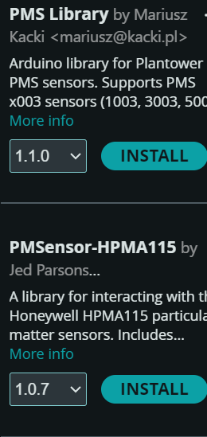

KIS에 불어오는 개혁의 바람
모두에게 열린
KIS를 만들겠습니다.
대충어쩌고저쩌고
두줄까지ㄱㄴ.

존경하는 학생 여러분, 안녕하십니까?
2027학년도 학생회장단 선거 고등부회장 후보 이민재입니다.
학생자치. 우리 학교가 강조하는 중요한 가치입니다. 그러나 지난 1년간 중등부회장으로 활동하며 깨달았습니다. 학생회가 주도하고 학생들이 뒤따르는 자치만으로는 우리 학교가 더 나은 방향으로 나아갈 수 없다는 것을 말입니다.
학생들의 눈높이에서 생각하고, 더 솔직하게 소통하며, 모두가 주체적으로 참여할 수 있어야 합니다. 학생자치 안에 권위주의와 엘리트주의가 자리 잡아서는 안 됩니다.
제가 추구하는 학생자치의 방향은 '모두에게 열린 KIS'입니다. 학생회와 학생 사이의 장벽을 허물고, 모두의 목소리가 모여 실제 변화로 이어지는 학교. 소수 정예가 아닌 우리 모두가 학생자치의 주체가 되는 풀뿌리 민주주의를 실현하고자 합니다.
이벤트와 복지는 학교생활에 즐거움을 더합니다. 그러나 그 즐거움을 지속시키고 뒷받침하는 것은 결국 제도입니다. 저는 당장의 만족을 위한 달콤한 약속보다, 학생 여러분의 장기적인 복리와 학생자치의 근본적인 발전을 선택하겠습니다.
저는 완벽한 후보자가 아닙니다. 여러분의 이야기를 듣고, 부족한 점을 배우며, 약속한 일은 끝까지 책임지는 후보자가 되겠습니다. 그리고 이러한 태도를 차기 학생회의 기조로 만들겠습니다.
학생회가 학생들을 위해 일하는 학교를 넘어, 학생들과 함께 만들어 가는 학교.
그 변화의 시작을 여러분과 함께하고 싶습니다.
감사합니다.
존경하는 학생 여러분, 안녕하십니까?
2027학년도 학생회장단 선거 고등부회장 후보 이민재입니다.
학생자치. 우리 학교가 강조하는 중요한 가치입니다. 그러나 지난 1년간 중등부회장으로 활동하며 깨달았습니다. 학생회가 주도하고 학생들이 뒤따르는 자치만으로는 우리 학교가 더 나은 방향으로 나아갈 수 없다는 것을 말입니다.
학생들의 눈높이에서 생각하고, 더 솔직하게 소통하며, 모두가 주체적으로 참여할 수 있어야 합니다. 학생자치 안에 권위주의와 엘리트주의가 자리 잡아서는 안 됩니다.
제가 추구하는 학생자치의 방향은 '모두에게 열린 KIS'입니다. 학생회와 학생 사이의 장벽을 허물고, 모두의 목소리가 모여 실제 변화로 이어지는 학교. 소수 정예가 아닌 우리 모두가 학생자치의 주체가 되는 풀뿌리 민주주의를 실현하고자 합니다.
이벤트와 복지는 학교생활에 즐거움을 더합니다. 그러나 그 즐거움을 지속시키고 뒷받침하는 것은 결국 제도입니다. 저는 당장의 만족을 위한 달콤한 약속보다, 학생 여러분의 장기적인 복리와 학생자치의 근본적인 발전을 선택하겠습니다.
저는 완벽한 후보자가 아닙니다. 여러분의 이야기를 듣고, 부족한 점을 배우며, 약속한 일은 끝까지 책임지는 후보자가 되겠습니다. 그리고 이러한 태도를 차기 학생회의 기조로 만들겠습니다.
학생회가 학생들을 위해 일하는 학교를 넘어, 학생들과 함께 만들어 가는 학교.
그 변화의 시작을 여러분과 함께하고 싶습니다.
감사합니다.
비전
공약 01
01학생 옴부즈맨 제도
이곳에 첫 번째 공약의 핵심 내용을 한두 문장으로 작성하세요.
어떤 변화를 만들까요?
이곳에 공약을 구체적으로 설명하세요. 왜 이 공약이 필요한지, 어떤 방식으로 실행할 것인지, 학생들에게 어떤 도움이 되는지를 작성하면 좋습니다.
기대 효과
공약이 실현되었을 때 기대되는 변화를 작성하세요.
공약 02
02학생 주도 시설 개선 건의
두 번째 공약의 핵심 내용을 간결하게 소개하세요.
구체적인 실행 계획
두 번째 공약의 내용과 실행 계획을 작성하세요. 실현 가능한 방법과 필요한 절차를 설명하면 공약에 대한 신뢰도를 높일 수 있습니다.
기대 효과
학생들이 실제로 체감할 수 있는 효과를 작성하세요.
공약 03
03학생회 Open-log
세 번째 공약의 핵심 메시지를 입력하세요.
학생의 일상을 바꾸는 방법
이 공약을 통해 해결하고 싶은 문제와 구체적인 추진 방안을 설명하세요. 필요하다면 실제 사례도 추가할 수 있습니다.
기대 효과
예상되는 긍정적인 변화를 작성하세요.
공약 04
04학생 위생 복지 개선
네 번째 공약의 핵심 내용을 간결하게 소개하세요.
구체적인 실행 계획
네 번째 공약의 내용과 실행 계획을 작성하세요. 실현 가능한 방법과 필요한 절차를 설명하면 공약에 대한 신뢰도를 높일 수 있습니다.
기대 효과
학생들이 실제로 체감할 수 있는 효과를 작성하세요.